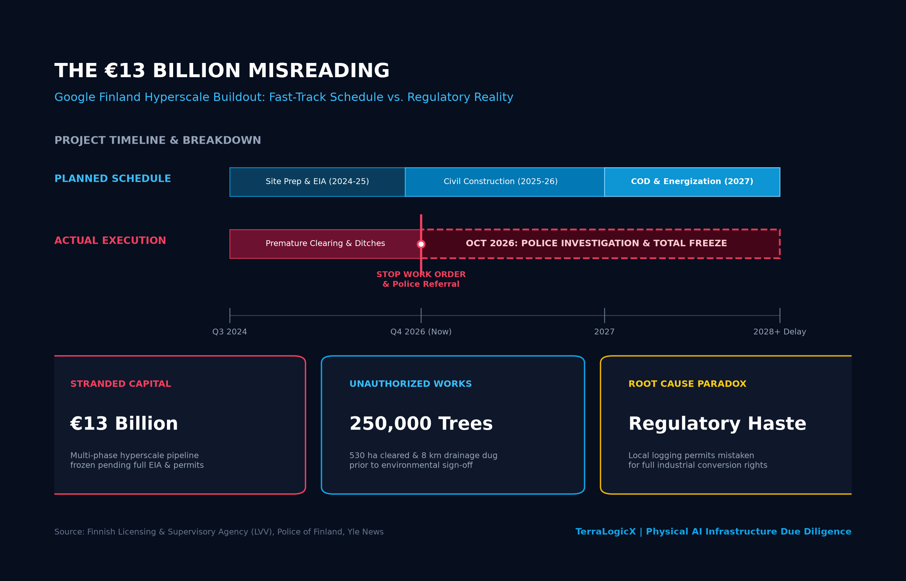
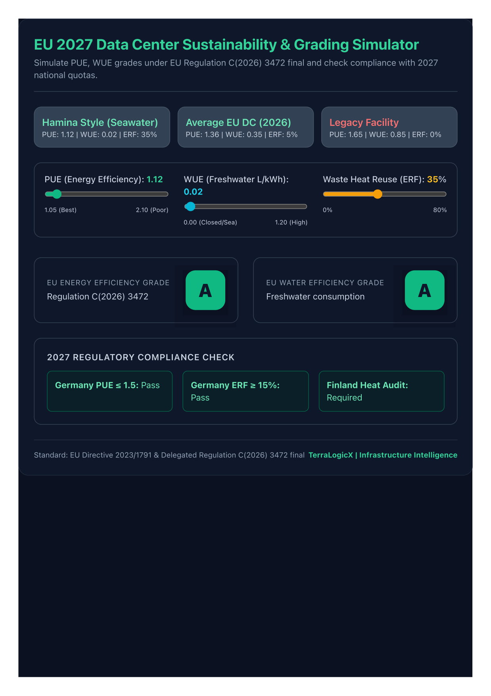
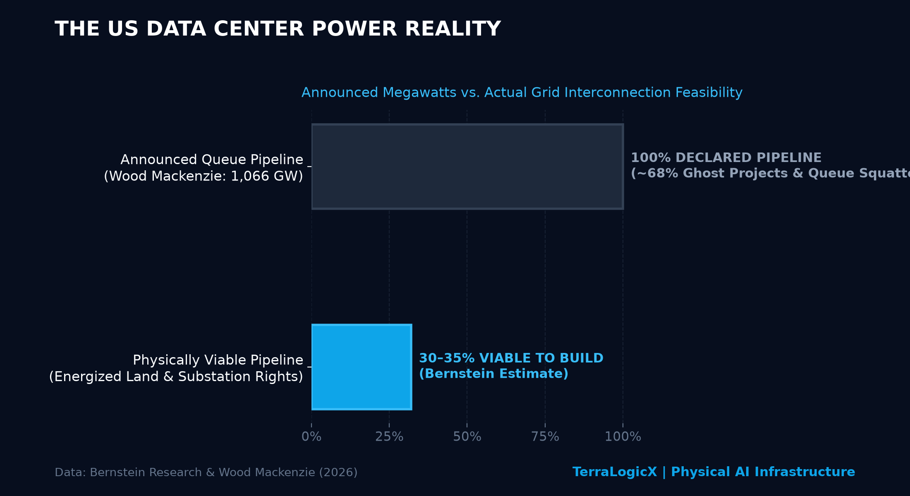

The Physical AI Reckoning: Inside the Legal, Debt, and Grid Bottlenecks Freezing the Hyperscale Buildout
For the past three years, the narrative surrounding artificial intelligence has been dominated by digital abstractions: parameter counts, algorithmic scaling laws, token economics, and multi-billion-dollar venture rounds. In the autumn of 2026, that narrative collided violently with the physical world.
The signs of friction are no longer isolated engineering anecdotes; they have metastasized into systemic capital and regulatory bottlenecks across three continents:
- In Finland, Google’s €13 billion hyperscale expansion was halted by an environmental police probe after contractors felled 250,000 trees and excavated 8 km of drainage ditches prior to completing mandatory impact assessments.
- In New York, Wall Street banks structured an unprecedented $63 billion debt package to finance processors for an unprofitable AI lab—shielded by vendor guarantees—just as China’s tech benchmark (the STAR50 index) shed $480 billion in a violent 40% valuation reset.
- In the United States, an exhaustive audit of interconnection queues reveals that over 65% of the 1,066 gigawatts of declared data center capacity consists of speculative "ghost projects," even as off-takers begin enforcing liquidated damages of up to $5 million per day for energization delays.
Chapter 1: The Finland Paradox — When Misreading the Law Freezes €13 Billion
Google’s infrastructure trajectory in Finland presents the defining case study in physical AI development: an engineering triumph in the south, and a multi-billion-euro regulatory freeze in the north.

The Southern Benchmark: Hamina
On the Gulf of Finland stands Google’s Hamina campus—a €3.5 billion brownfield achievement operating inside a converted 1950s Stora Enso pulp and paper mill. Hamina is an engineering masterclass in circular infrastructure:
- Zero Potable Water Consumption: Draws raw seawater through existing granite tunnels built seven decades ago, eliminating chemical refrigerants and fresh-water evaporation.
- 98% Carbon-Free Energy: Powered by 629 MW of contracted wind power and baseload from the nearby Loviisa nuclear plant.
- Municipal Heat Integration: Server exhaust heat is captured via heat pumps and fed directly into the municipal district heating network of Haminan Energia, supplying 80% of the heating demand for ~2,000 local homes, schools, and civic buildings.
- PUE of 1.12: Seamlessly qualifying as an elite Class A facility under upcoming European mandates.
The Northern Stall: Muhos & Kajaani
In stark contrast, Google’s northern expansion program—involving nine proposed data halls across 1,400 hectares in Muhos and Kajaani—reveals what happens when hyperscale haste overrides statutory due diligence.
Eager to prepare civil foundations ahead of next-generation processor deliveries, Google’s operating subsidiary (Tuike Finland Oy) clear-cut approximately 250,000 trees across 530 hectares, stripped fertile topsoil, and excavated 8 kilometers of drainage channels—before completing the mandatory Environmental Impact Assessment (EIA / YVA-laki).
When the Finnish Licensing and Supervisory Agency (LVV) intervened, Google cited a "misinterpretation of forestry law," arguing that municipal logging notices were sufficient. The regulator’s ruling was unequivocal: local forestry filings do not supersede national environmental impact statutes when repurposing virgin land for heavy industrial hyperscale use.
Following reports of sediment run-off fouling local streams, the LVV formally referred the case to the Police of Finland under the Water Act and Chapter 48 of the Criminal Code (Environmental Crimes). Heavy civil works are halted, and a €13 billion capital pipeline is frozen until at least late 2027.
Chapter 2: The EU 2027 Regulatory Cliff
The legal freeze in Finland is not a localized anomaly. Under the EU Energy Efficiency Directive (Directive (EU) 2023/1791) and the Delegated Regulation C(2026) 3472 final, every data center in the European Union with an IT capacity exceeding 500 kW will receive a public electronic performance certificate with an efficiency rating from Class A to Class G starting in August 2027.

- Power Usage Effectiveness (PUE): Facilities with PUE > 1.50 will be legally banned from operation in Germany after July 1, 2027 under the Energy Efficiency Act (EnEfG). Hamina's PUE of 1.12 earns Class A status.
- Water Usage Effectiveness (WUE): Class A requires consumption ≤ 0.10 L/kWh. Evaporative cooling towers consuming millions of gallons of potable water face regulatory phase-out.
- Energy Reuse Factor (ERF): Germany mandates ≥ 15% heat reuse by July 2027, rising to 20% by 2028. Finland's Waste Heat Law (1382/2025) mandates district heating integration agreements for new facilities > 1 MW before building permits are issued.
Chapter 3: The $63 Billion Debt Illusion
While European regulators crack down on site violations, global capital markets are displaying an unprecedented bifurcation.
In Asia, the speculative AI equity cycle has experienced a violent reality check. China’s tech benchmark, the STAR50 index, has dropped roughly 40% from its summer peak, erasing $480 billion in market value in under four months. Goldman Sachs revealed that at peak euphoria, AI-linked names accounted for an astonishing 42% of China's total stock market capitalization and 57% of daily trading turnover.
Against this $480B drawdown, Wall Street escalated: a banking syndicate led by Bank of America, Blackstone, Citi, and Morgan Stanley arranged an extraordinary $63 billion debt package to finance Broadcom AI hardware for Anthropic.
Why are tier-1 investment banks scrambling to lend tens of billions to an AI research lab whose draft IPO prospectus revealed an $80.7 billion accounting loss? The answer lies in credit engineering:
- The SPV & Residual Value Shield: The debt sits in an off-balance-sheet Special Purpose Vehicle (SPV) where Broadcom provides a residual value guarantee to lenders. If accelerators lose market relevance in three years, the hardware vendor absorbs the impairment—not the banks.
- The "Elon Musk as Landlord" Nexus: While Amazon invested $4 billion for non-voting equity, Anthropic is quietly wiring roughly $1.25 billion per month ($41 million per day) to its primary rival, Elon Musk, to lease compute capacity at xAI’s Colossus facility in Memphis. Rivals on social media, landlord and tenant in private.
- The Circular Capital Conveyor: Banks lend to the SPV → The SPV buys hardware from Broadcom → Anthropic leases the capacity → Anthropic pays Musk and cloud providers for power → Big Tech routes capital back to Anthropic to book cloud revenue.
Chapter 4: The US Grid Reality — Why 65% of Megawatts Are "Ghost Projects"
The fundamental vulnerability in this multi-billion-dollar debt machine is that processors cannot generate cash flow without energized high-voltage substations.

Recent audits by Bernstein Research and Wood Mackenzie expose the scale of the bottleneck:
- 1,066 GW in the Queue: Total data center interconnection requests filed across US regional transmission organizations (PJM, ERCOT, MISO) have surpassed one terawatt.
- The 30–35% Feasibility Reality: Bernstein’s analysis demonstrates that only 30% to 35% of announced pipeline capacity will ever reach commercial operation. The remainder consists of speculative "ghost projects" and duplicate applications.
- The $5M-a-Day Solvency Test: Off-takers are no longer accepting construction delays, enforcing liquidated damages of up to $5 million per day. A 60-day substation delay generates $300 million in cash penalties, wiping out developer equity before tenant billing starts.
Chapter 5: The TerraLogicX Underwriting Rules
The era of speculative "build the warehouse and the power will follow" is over. The winners of the 2026–2030 supercycle will be the builders who underwrite physical reality before committing capital:
- Audit Time-to-Power Before Hardware Procurement: Processor delivery cycles move in quarters; utility transmission lines move in Olympic cycles. Committing to hardware deliveries without a binding Point of Interconnection (POI) creates catastrophic asset depreciation.
- Prioritize Industrial Brownfields Over Greenfield Expansion: Legacy industrial sites (decommissioned paper mills, retired power stations) possess existing water intake permits, established zoning, high-voltage easements, and community integration. The CapEx premium of industrial retrofitting is trivial compared to the cost of a multi-year environmental injunction.
- Sync Debt Amortization with Substation Lead Times: Align financing obligations with conservative utility commissioning dates. If interconnection schedules exceed debt maturities, the asset is structured for distress.
- Prepare for the Distressed Consolidation Wave: As speculative projects stall and delay penalties bleed developer liquidity, 2027 will witness the largest distressed M&A wave in infrastructure history. Institutional capital will acquire partially completed campuses and secured POIs for 30 to 40 cents on the dollar.